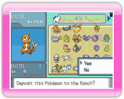
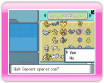
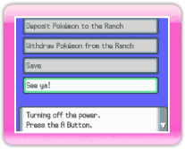

|
13
|
Depositar Pokémon
|
 |
|
Antes de depositar un Pokémon en la granja, consulta 12. Procedimientos de conexión a una DS.
 Pantalla de DS Selecciona los Pokémon de tu consola DS que quieras depositar en la granja. Aparecerá un mensaje, Deposit this Pokémon to the Ranch? (¿deposita este Pokémon en la granja?). Elige Yes (sí).  Pantalla de DS Cuando termines de depositar Pokémon, elige CLOSE (cerrar). Aparecerá un mensaje, Quit Deposit operations? (¿salir de las operaciones de depósito?). Selecciona Yes (sí) para volver al menú principal de la consola DS.  Pantalla de DS Cuando elijas See ya! (¡nos vemos!) en el menú principal de la consola DS, aparecerá un mensaje: Would you like to save and quit? (¿quieres guardar y salir?). Selecciona Yes (sí) para terminar la conexión. Si aparece en pantalla este mensaje Data saved. Si la
pantalla muestra el mensaje Turning off the power. (apagando la
consola) oprime |

 para salir.
para salir. |
 |
 |